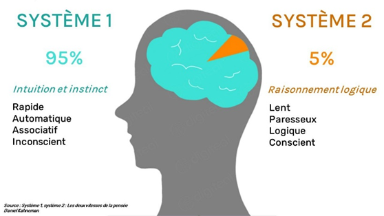
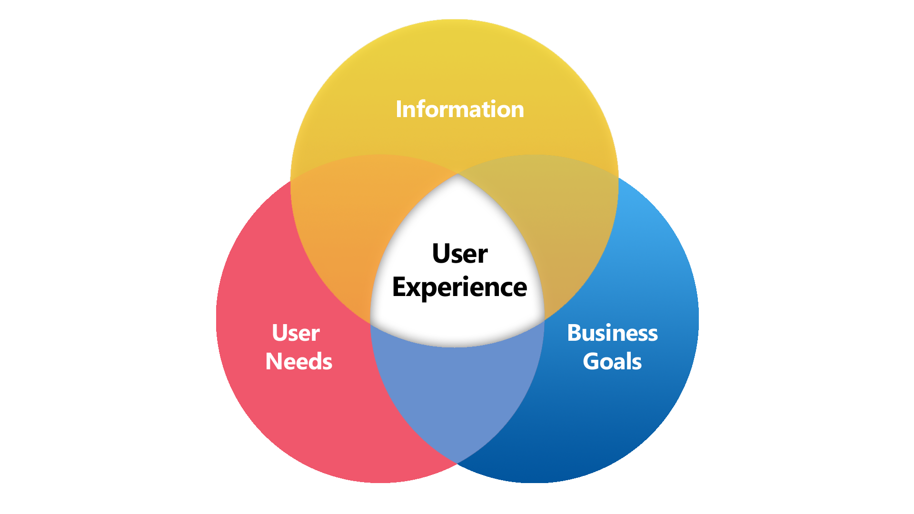
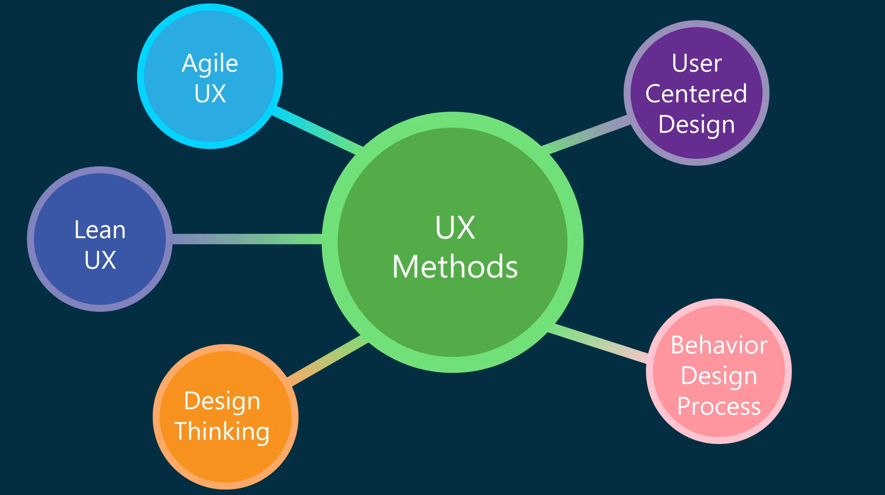

4 - Identifier ses utilisateurs#
🏄 Avant de Commencer#
Vous avez identifiés un besoin, posé les bases d’un projet. Les idées fusent, elles s’entremêlent et vous avez envie de partir dans de multiples directions. Calmons nous quelques instants et prenons le temps de réfléchir a quelles sont les utilisateurs et utilisatrices a qui notre projet s’adrèsse
Informations
✍ - Vincent
🚧 - En cours
🔨 - 12/08/2025
🕑 - 20 - 30 min
Objectifs Pédagogiques
⭐ Objectif 1
⭐ ⭐ Objectif 2
⭐ ⭐ ⭐ Objectif 3
Note
Enumérer les différents objectifs pédagogiques (star classification avec difficulté taxonomie de bloom)
Sommaire
🌐 Internet
🕸️ World Wibe Web
💻 Site Web
🛒 E-Commerce
💑 Le Consommateur
Activité A
Activité A
Liens : 🎓 Stratégie Webmarketing
Syllabus
Module 3: Identifier ses utilisateurs et réaliser des fiches persona
Objectif global:
L’objectif global est que l’apprenant comprenne et maîtrise les étapes d’identification des utilisateurs mais aussi sache créer et utiliser des fiches personna.
Plan de cours:
Présentation des règles et concepts généraux
Identifier et définir les utilisateurs
Identifier les points de tensions et analyser les besoins des utilisateurs
Créer et utiliser des personas dans la conception
Connaître les méthodes d’analyse d’un site web ou d’une application pour en déduire des utilisations
Livrables:
Avoir la méthode et les outils pour identifier et définir ses utilisateurs
Avoir la méthode pour créer des fiches personna
Support de Cours
Warning
Pas de support, a récupérer
Warning
Implémenter les bonnes pratiques pour créer un questionnaire (transférer depuis la veille)
🧠 La Théorie#
L'Exprience Utilisateur
Expérience#
Besoins#
comment créer les personas
Exemple détaillé Thevy bijoux
lien persona / Canvas
Votre Problématique#
Note
Lien avec le chapitre précédent (définir votre projet)
Utilisateur#
Recherche Utilisateur#
Pourquoi s’intéresser aux utilisateurs ?#
C'est primordial !!
Vous n’êtes pas vos utilisateurs (vos amis, votre famille et vos collègues non plus)
Vos décisions concernant votre produit sont souvent biaisées
Vous concentrer sur le besoin et le contexte d’utilisation de votre cœur de cible vous permettra d’aller plus vite en vous focalisant sur les fonctionnalités clés
Vous aurez davantage de facilité à trancher et à prendre des décisions pertinentes
Vous mettre à la place de vos utilisateurs finaux vous permettra d’avoir des idées auxquelles vous n’aurez peut-être pas pensé
{kind=link}

Source https://sapientagestion.com/ - reproduire la figure pour éviter copywrit#
Biais cognitifs#
Note
On en parlé au chapitre précédent (La Veille)
🎯 Les Cibles#
BtoB / BtoC
Coeur de cible#
Cible Principal#
Cible Secondaire#
Cible Relais#
Choisir…#
C'est renoncé ...
Eh oui, c
Générations#
Note
Parler de l’age en décrivant la statistique suivante et expliquer pourquoi une classification par génération est pertinente

Trouver plus de statistiques sur Statista
Gen A
Note
C’est qui, extraire les infos du rapport
Gen Z
Note
C’est qui, extraire les infos du rapport
Gen X
Note
C’est qui, extraire les infos du rapport
Millenials
Note
C’est qui, extraire les infos du rapport
Baby Boomer
Note
C’est qui, extraire les infos du rapport
Entre 60 et 79 ans (en 2025).
Note
Activité. Sélectionnez une cible pour votre projet parmis celle proposés ci-dessus et aller checker dans ce rapport ses habitudes de consommation
Personas#
La meilleure façon de répondre efficacement aux besoins d’une variété d’utilisateurs est de concevoir pour des types spécifiques de personnes ayant des besoins spécifiques.
Cooper, 2004
C’est quoi ?#
Provisional personas (Cooper, 2004)
Ad-hoc personas (Norman, 2004)
Proto personas
Pourquoi les utiliser#
Rester concentré sur les utilisateurs: S’assurer que les fonctionnalités ont été construites avec l’utilisateur en tête.
Favoriser la génération d’idées: Ils sont souvent utilisés comme supports lors de séances de brainstorming.
Aider l’équipe à collaborer et communiquer: Ils permettent l’établissement d’un langage commun et facilitent l’argumentation et les prises de décisions éclairées.
Construire vos personas#
Warning
Il en faut au moins deux qui doievent être construites sur le canva et exporté sur le Cahier des charges
Note
Créer un génially qui reprend les différentes étapes de la création:
1 - Recherche utilisateur: Rassembler un maximum de données concernant vos utilisateurs cibles
2 - Analyse: Recouper ces données et identifier des variables comportementales similaires et synthétiser
3 - Modélisation: Créer un personnage fictif qui incarne au mieux son utilisateur cible
Mauvaises Personas#
Note
Flash card format ?
Personas jumeaux: Différents en apparence mais très proches en terme de problématique de conception
Personas élastiques: Ils peuvent être tout le monde et personne à la fois. Leurs caractéristiques ne sont pas suffisamment précises
Personas promotionnels: Ils sont conçus sur la base d’idées préconçues pour justifier les choix du concepteur (biais de confirmation).
Personas infaillibles: Les utilisateurs rêvés, qui accomplissent leurs tâches sans erreurs et lisent les manuels d’instruction.
Les personas “ma mère”: Ils sont basés sur la connaissance d’une personne réelle, souvent de l’entourage du concepteur (parents ou grands-parents) pour créer des profils non technophiles.
Outils#
Générer des images de visages (qui n’existent pas)
UX Research#
Reflexion sur ce que l’on a fait jusque la + introduction aux différentes méthodes d’UX Research
{kind=link}

name: User-experience-diagram :align: center#
{kind=link}

Note
Reprendre le schéma et créer une description rapide des différents domaines
Créer un format grid avec les différentes et liens vers une page dédié UX Research + anchor
Business Canva#
Note
Idée activité : Leur faire remplir un ucdc avec les ajustements obtenue suite a la recherche utilisateur
💪 Mise En Pratique#
📈 Pour Finir#
Conclusion#
Note
Conclusion plus fiche résumé (production collaborative ? Framanote ?) - produire un pdf exportable
Test#
Tes Connaissances#
Note
Créer un grand Storyline pour ajouter un questionnaire a chaque cours, enregistre la progression de l’apprenant et offre une collection de badge !!
Ton Projet#
Dossier Projet
Livrable 1
Présentation Canva
Livrable 1
Sources#
Lister les figures
Glossaire
Note
termes du glossaire
Liste Figures
Note
Référencer les figures de la page ?
Plus de Ressources#
Commentaires#
Note
Lien vers formulaire de feedback + possibilité de donner son avis dans les commentaires.